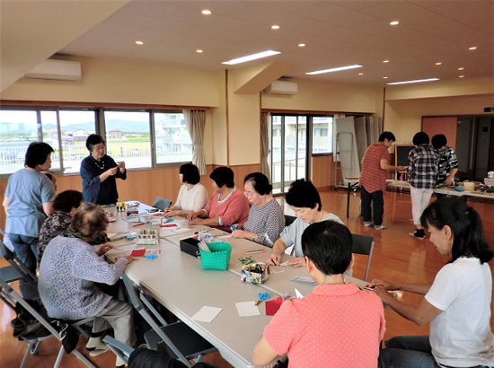
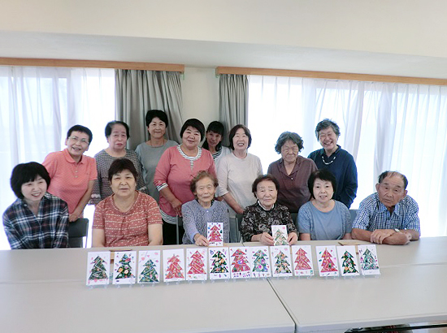

被災地のいま 宮城県・福島県の現状
「被災地のいま」 ～宮城県亘理町～
第75回 2019年11月5日 ―まち・住まい・コミュニティ―
ゆるやかなコミュニティが息づくオープンな集会所
宮城県亘理町／西木倉災害公営住宅ふれあい喫茶
亘理町の西木倉（にしきぐら）災害公営住宅は、阿武隈川と鳥の海に挟まれた荒浜地区にあります。３棟の集合住宅の周囲には住宅や商店がゆったりと建ち並び、のどかな風景が広がっています。
牧野かつ江さんは毎週月曜から金曜の午前中、地域の人が気軽に集まれるように集会所のカギを開け、お茶を準備して待っています。自治会などから託された役目があるわけではなく、まったくのボランティアです。
「何をするわけでもないの。みんなでお喋りするだけ」。年に1回ずつ芋煮会や夏祭りなど交流の場はありますが、「普段からみんなと仲良くやっていきたい。自分にとっても良いことだから」と牧野さんは言います。
みやぎ生協のふれあい喫茶（※）も、その一つです。きっかけは亘理店でふれあい喫茶を体験し、当時住んでいた仮設住宅での開催を要望したことでした。生協との付き合いは公営住宅に入居してからも続き、ふれあい喫茶を楽しみに荒浜地区まで足を運ぶ参加者がいるほどの人気行事になっています。
公営住宅のなかには集会所の運営管理が負担になって、あまり利用されていないケースもあります。仮設住宅では常に開放されていた集会所が、公営住宅では常にカギのかかった状態になることを憂慮する声もありました。そうしたなか、集会所をほぼ毎日開放して人の集まる機会を設けている牧野さんの試みは、とても貴重であることが分かります。
佐藤美智子さんは以前住んでいた場所に自宅を再建しました。ふれあい喫茶に参加したきっかけを「荒浜に戻ったけれど昔の行政区も、昔いたご近所さんもいなくなった。地域になかなかなじめないで、どこを頼りにしていいか分からなかった。そんな時、生協で喫茶をしているよと聞いて来てみたんです」と話してくれました。
西木倉災害公営住宅でのふれあい喫茶、毎週月曜から金曜までの気軽な集まり、どちらも入居者だけでなく近隣の住民や少し離れた地域からの参加があります。「外にでて人と話をしよう」「自分の興味のあることに参加してみよう」が動機です。
震災前の集落をベースにしたコミュニティとは異なる、人と人のつながりから生まれるコミュニティがそこにはあります。行政区など場所のコミュニティが固まるにはまだ時間がかかりますが、人の“気持ち”をつなぐゆるやかなコミュニティはしっかりと広がり、浸透しています。
- ※被災された方を対象に、仮設住宅や災害公営住宅の集会所、店舗や組合員集会所などで、一緒にお茶を飲みながらおしゃべりを楽しむ活動

▲ふれあい喫茶は月1回の割合で開催。9月は、被災された方々の手作り団体「さくら団地ゆめ工房）代表の市川一子さんを講師にクリスマスカードを手作りしました。

▲ふれあい喫茶に参加した皆さん。前列左から2番目が牧野かつ江さん、最後列左端が佐藤美智子さん。
2019年3月21日、みやぎ生協はコープふくしま・福島県南生協と組織合同しました。このコーナーのタイトルも「被災地のいま みやぎ生協・コープふくしまから宮城・福島のいまをお伝えします」に変え、福島県の現状についてもお伝えしていきます。
前の記事
第74回「被災地のいま ～福島県広野町～」（2019年10月5日）